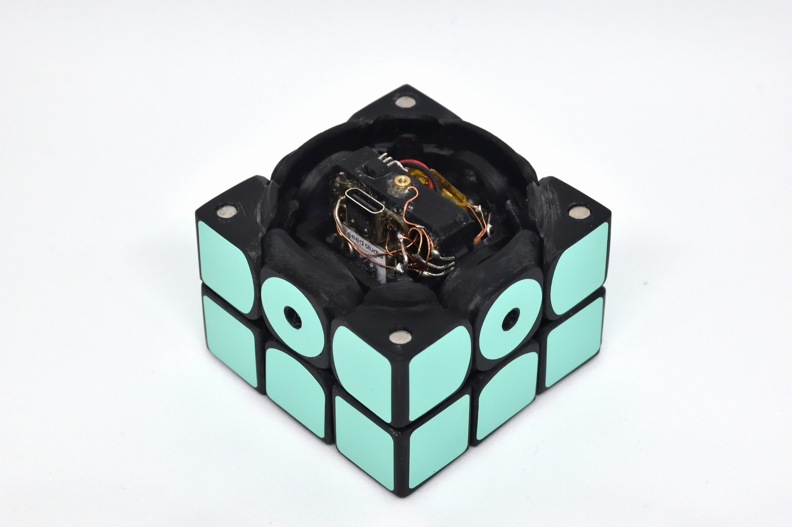
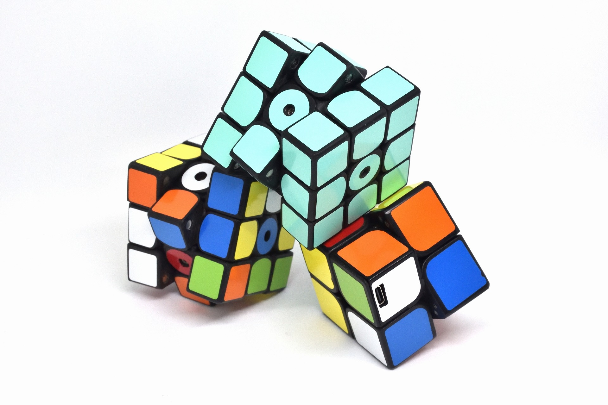
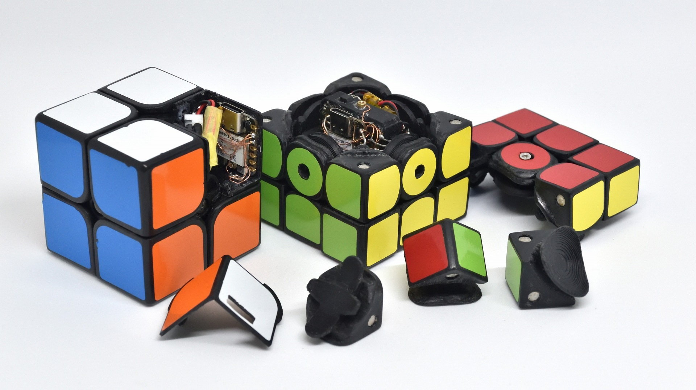
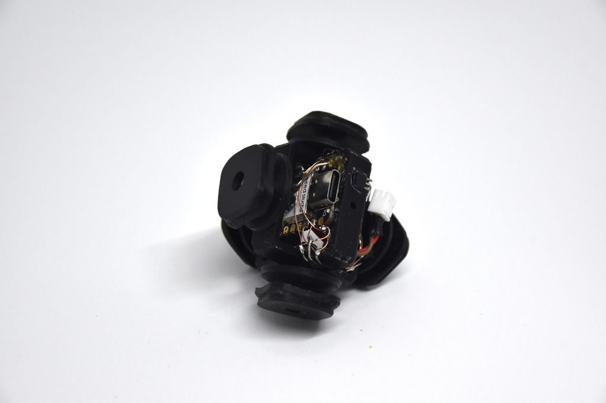
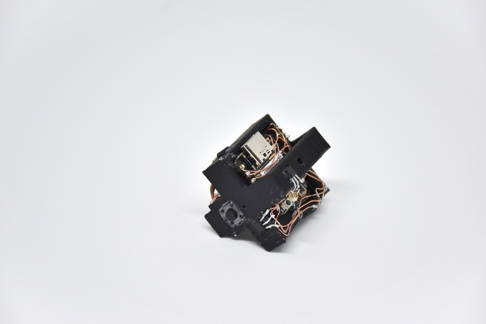
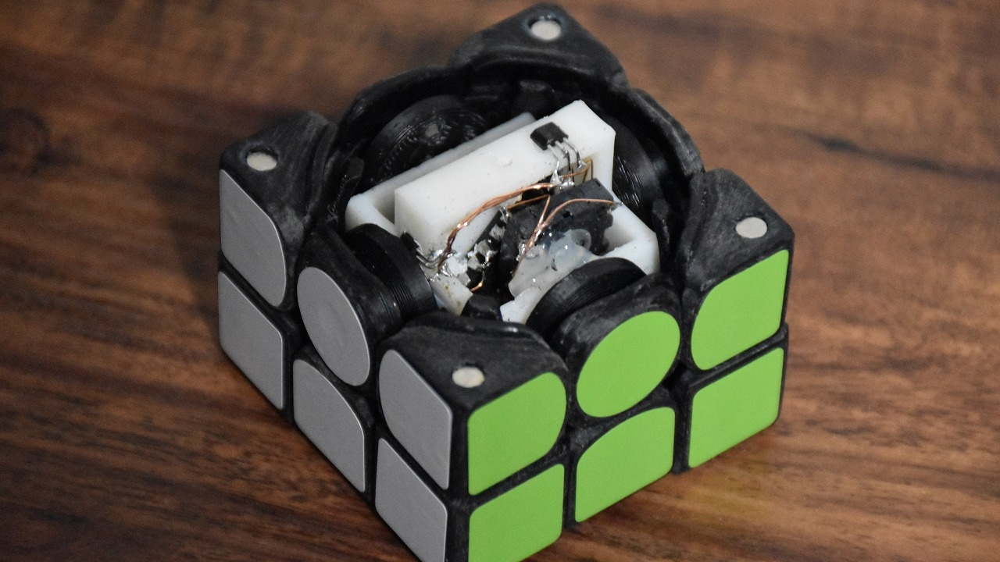

CuYu
Puzzle-shaped musical instrument (2021-2024)
I inserted electronic circuits in a handmade 3D puzzle, and created a musical instrument. There are 3x3x3 versions and a 2x2x2 version.
A solve directly becomes a music. Also, turning like a pro becomes a music.
The puzzle was made with a 3D printer and has an ESP32C3 microcontroller and a hall sensor inside. It communicates wirelessly with an external speaker to play sounds. CuYu also supports external power supply via a dedicated charger.
Geekten 2024 WingArc1st Award





